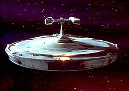
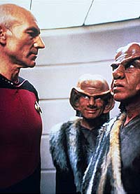
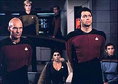

|
MANCHETE
DO EPISDIO
Episdio
faz boa escolha ao abdicar
de fundo moral em favor da aventura
Episdio
anterior | Prximo
episdio
Sinopse:
Data Estelar: 41723.9.
O Ferengi DaiMon Bok oferece um presente a Picard: a danificada nave
Stargazer, que Picard comandara anos antes. A ltima misso da
nave fora a batalha de Maxia, onde, aps ser severamente danificada
--mas ainda capaz de destruir a nave Ferengi oponente--, ficou
deriva.
O que Picard no sabe que o filho de Bok comandava a nave destruda,
e que Bok considera Picard o responsvel pela morte de seu filho.
 A
fim de se vingar, ele utiliza um aparelho aliengena para controlar
a mente de Picard e lev-lo a bordo da Stargazer, para que o capito
reviva a batalha. S que desta vez a nave Ferengi destruda foi
substituda pela Enterprise.
Data, entretanto, consegue desenvolver uma estratgia para
neutralizar a "Manobra Picard", utilizada anteriormente
pelo capito em Maxia. Riker ento consegue trazer Picard de volta
a seu juzo perfeito, instruindo-o para que destrua o aparato que
est interferindo com seus pensamentos.
Bok destitudo do comando na nave Ferengi. A acusao:
perseguiu uma causa sem ter potenciais lucros como objetivo.
Comentrios:
 "The
Battle" um episdio que se afasta da tendncia geral
da temporada: trata apenas de contar uma boa aventura em um contexto
definido, em vez de apresentar o padro permeado por conceitos de
"moral da histria" ou coisa que o valha.
E justamente a fuga do que foi --em linhas gerais-- o primeiro ano
da srie a maior qualidade do episdio. Evitando gastar tempo
para passar lio de moral, os roteiristas puderam utilizar a histria
para apresentar adequadamente os elementos necessrios ao
desenvolvimento da trama.
A histria pinta um bom retrato de contexto, trazendo ao espectador
elementos de background como a batalha de Maxia, em que Picard, no
comando da USS Stargazer, destri uma nave Ferengi com a estratgia
que mais tarde ficaria conhecida como Manobra Picard. Aprendemos
tambm como o capito perdeu sua antiga nave, fato que daria mais
pano para a manga em "The Measure of a
Man", do segundo ano da srie.
Entretanto, se o passado foi bem desenhado, a caracterizao dos
personagens continua to rasa quanto de costume. Os Ferengis
melhoraram ligeiramente, principalmente pela atuao singular do
primeiro-oficial da nave aliengena em seus dilogos com Riker.
Mas o comportamento geral continua deixando a desejar,
principalmente se comparado ao padro Deep Space Nine de
qualidade na caracterizao Ferengi.
 Essa
falha na caracterizao dos inimigos prejudicou um pouco o
desenvolvimento da premissa original da histria --retratar uma
emocionante aventura em que um poderoso adversrio quer se vingar
de Picard--, j que os Ferengi continuam se mostrando to
apatetados como de costume. No se pode ter um conflito mortal
convincente se o inimigo no parece to mortal... mas mesmo assim,
a histria consegue se sustentar, garantindo 45 minutos de bom
entretenimento.
Citaes:
Ferengi - "As
you humans say, 'I'm all ears!'"
("Como vocs, humanos, dizem, 'Sou todo ouvidos!'")
Riker - "I hope you're right, Data."
("Espero que esteja certo, Data.")
Data - "No question of it, sir."
("No h dvida disso, senhor.")
Trivia:
 A ponte da Stargazer foi construda modificando a ponte da
Enterprise que havia aparecido nos filmes de cinema at aquele
momento.
A ponte da Stargazer foi construda modificando a ponte da
Enterprise que havia aparecido nos filmes de cinema at aquele
momento.
A
princpio, a Stargazer seria uma nave da classe Constitution, a
mesma da Enterprise. A mudana para uma nave da classe
Constellation aconteceu j no final das filmagens, o que fez com
que LeVar Burton tivesse que refazer uma cena, na qual seu
personagem La Forge dizia a classe da nave.
Outros
episdios em que o tema dos nove anos em que Picard estava na
Stargazer citado: "The Measure of a
Man", do 2 ano; "Allegiance", do 3
ano e "The Wounded", do 4
ano. Alm dos episdios "Family",
do 4 ano; "Violations",
do 5 ano e "Attached", do 7 ano, que tratam
mais da morte do marido da dra. Beverly Crusher, Jack Crusher, que
servia a bordo da Stargazer com Picard.
Neste
episdio que ocorre a primeira meno "Manobra Picard".
Mais tarde, essa expresso seria usada para descrever a ajeitada de
uniforme usual do ator Patrick Stewart.
Ficha
tcnica:
Histria de Larry Forrester
Roteiro de Herbert Wright
Direo de Rob Bowman
Exibido em 16/11/1987
Produo: 010
Elenco:
Patrick Stewart como
Jean-Luc Picard
Jonathan Frakes como William Thomas Riker
Brent Spiner como Data
LeVar Burton como Geordi La Forge
Michael Dorn como Worf
Gates McFadden como Beverly Crusher
Marina Sirtis como Deanna Troi
Wil Wheaton como Wesley Crusher
Denise Crosby como Natasha "Tasha" Yar
Elenco convidado:
Frank Corsentino como DaiMon Bok
Doug Warhit como Kazago
Robert Towers como Rata
Episdio
anterior | Prximo
episdio
|